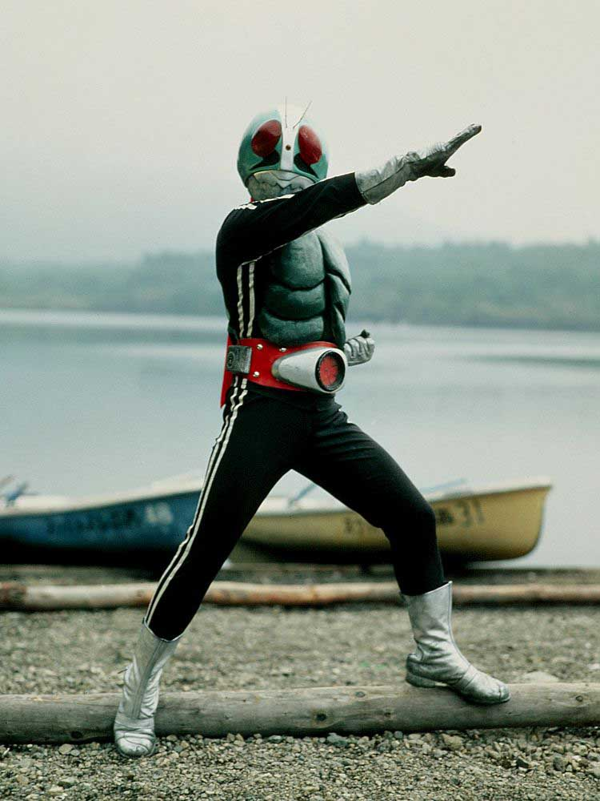
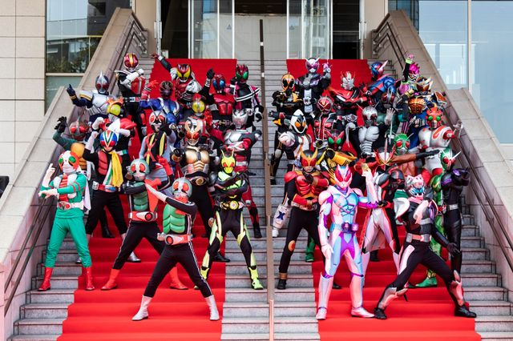

仮面ライダーとは

1971年に放送された『仮面ライダー』に端を発した、石ノ森章太郎原作・東映制作による特撮テレビドラマシリーズに登場
するヒーロー。
主人公などが仮面ライダーと呼ばれる戦士に変身し、怪人と総称される敵と戦うことが多い。
驚異的な筋力や能力を持つもち、中には特殊能力を持つライダーも存在する。
モチーフはバッタ、カブトムシ等の昆虫が多いが、最近では本、お菓子など幅広い物がモチーフになっている。
仮面ライダーシリーズ

仮面ライダー1号から現在の仮面ライダーゼッツまで約４０作程続いている。
「昭和」の頃は敵組織に改造された改造人間がベースだったが、「平成」、「令和」は作品ごとに異なる。
そのため仮面ライダーの中ですべてのライダーに当てはまる定義は存在しない。
今回は「平成」、「令和」の仮面ライダーにスポットライトを当てる。
仮面ライダー一覧